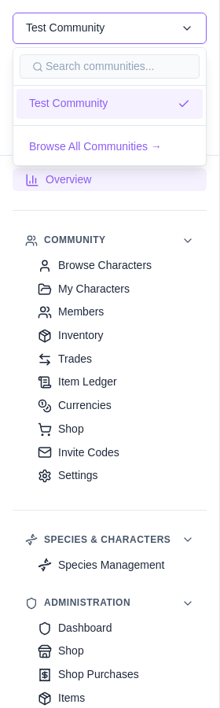

Every community has an address of its own
A community is served from its own hostname. Cloverse is at
cloverse.chardb.cc; the site itself is at
chardb.cc. Its pages hang off that host with no
community segment in the path at all:
cloverse.chardb.cc/ — the communitycloverse.chardb.cc/characters — its characters
cloverse.chardb.cc/members — its memberscloverse.chardb.cc/shop — its shop
These pages used to carry the community in the path
— chardb.cc/communities/<id>/characters and
the like. Old links still work; they redirect to the community's own
host. It is worth re-saving any bookmark you rely on, so the address
you keep is the one you land on.
The split is by who owns the thing, not by where you happened to find it.
On a community's host — everything the community owns: its characters, species, traits and variants, its item types, currencies and shop, its members and trades, and its administration.
At the apex — everything a person owns, or the site does: profiles as others see them, galleries, your media library, your feed, your liked lists, your own characters across every community, and signing in.
On either, because they write — uploading, and editing your own profile. These are yours rather than the community's, but the host you are on when you upload something is what decides whose moderators review it, so they are reachable from both rather than sending you to the apex first. You still have only one profile, and it says so when you edit it from a community.
A character is a community's, reached through its species — so a character page lives on the host of the community its species belongs to. The exception is a character with no species: it belongs to no community, so it lives at the apex, and following a link to one from a community will land you there.
You do not have to work any of this out. Links know which host they need and only cost a page load when they genuinely cross one; the sidebar swaps itself over when you arrive. See Community Navigation.

One sign-in covers every community. The session is
held for the whole domain, so signing in once at
chardb.cc signs you in on
cloverse.chardb.cc and every other community at the
same time.
Because of that, the login page is always at the apex. If you follow a sign-in link from inside a community you will notice the address change — that is deliberate, and you are sent back to the page you came from afterwards.
Signing out signs you out everywhere, for the same reason.
Every name under chardb.cc resolves, whether or not a
community holds it. A hostname that names no community is refused
rather than quietly serving the site under the wrong name —
otherwise anything.chardb.cc would look like a real
place.
Some names cannot be communities at all. Things the infrastructure
uses or will need — www, api,
admin, docs, status, the mail
conventions — are reserved, as are environment names like
dev and staging, which would be actively
confusing to hand out. Slugs are between 3 and 63 characters.